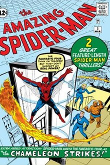
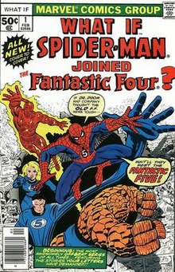
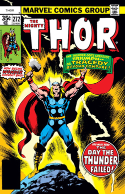
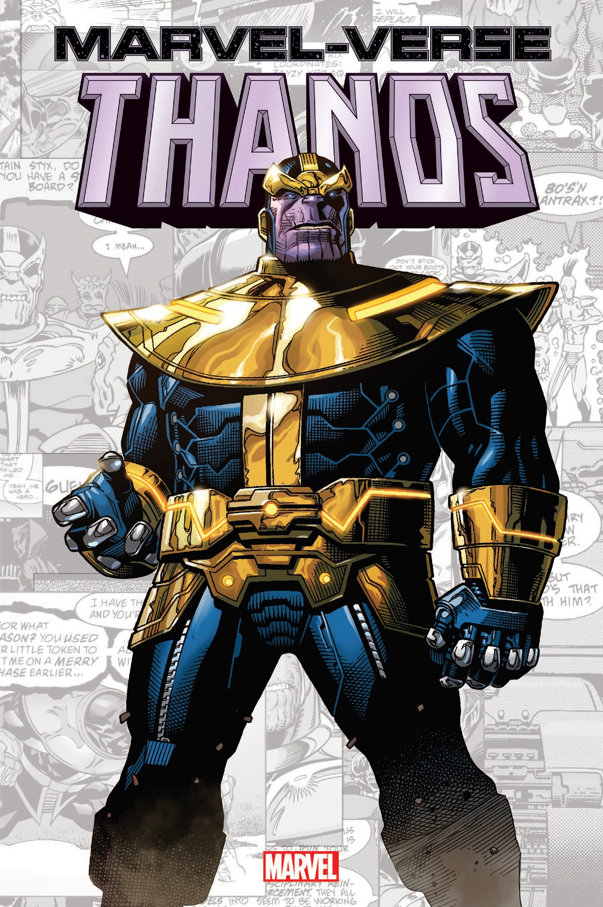
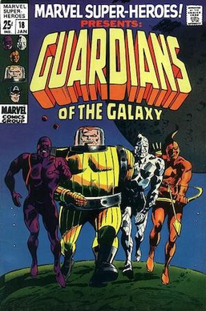
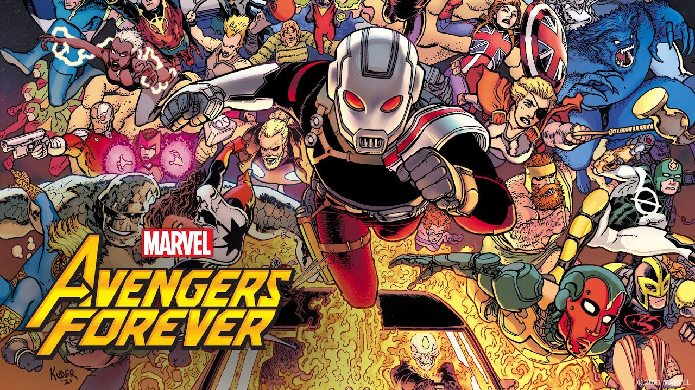

Kapteine Marvela ir vairāku izdomātu supervaroņu vārds, kas parādās amerikāņu komiksu grāmatās, kuras izdevusi izdevniecība Marvel Comics. Lielākā daļa no šīm versijām pastāv Marvel galvenajā kopīgajā Visumā, kas pazīstams kā Marvel Universe.
 Apbrīnojamais ZirnekļcilvēksApbrīnojamais Zirnekļcilvēks ir amerikāņu komiksu sērija, ko izdevusi Marvel Comics un kuras galvenais varonis ir izdomāts supervaronis Zirnekļcilvēks. Atrodoties franšīzes galvenajā nepārtrauktībā, tas sāka izdot 1963. gadā kā pusmēneša periodisks izdevums (kā agrāk bija Amazing Fantasy), ātri tika palielināts līdz ikmēneša izdevumiem un tika izdots nepārtraukti, ar īsu pārtraukumu 1995. gadā, līdz tā otrajam sējumam. ar jaunu numerācijas secību 1999. gadā. 2003. gadā sērija atgriezās pie pirmā sējuma numerācijas secības. Nosaukums dažkārt tiek publicēts reizi divās nedēļās un tika publicēts trīs reizes mēnesī no 2008. līdz 2010. gadam.
 What ifKo darīt, ja, dažkārt stilizēts kā Ko darīt, ja...?, ir Marvel Comics izdota komiksu antoloģijas sērija, kuras stāsti pēta, kā Marvel Visums varētu būt attīstījies, ja tā vēsturē nebūtu notikuši galvenie mirkļi, kā tas notika vispārējā nepārtrauktībā. Kopš filmas “Kas būtu, ja būtu” debijas 1977. gadā, komiksi ir publicēti 13 sērijās, kā arī dažkārt izdoti atsevišķi izdevumi. 2021. gadā kanālā Disney+ pirmizrādi piedzīvoja animācijas seriāls, kas balstīts uz komiksiem Kas būtu, ja tā darbība norisinās Marvel Cinematic Universe multiversā.
 TorsTors Odinsons vai vienkārši Tors ir izdomāts varonis, kas parādās Marvel Comics izdotajās amerikāņu komiksu grāmatās. Varonis ir balstīts uz skandināvu dievību ar tādu pašu nosaukumu, Asgardas pērkona dievu, kura apburtais āmurs Mjolnirs ļauj viņam lidot un manipulēt ar laikapstākļiem, kā arī citas pārcilvēciskas īpašības. Supervaroņu komandas Avengers dibinātājam Toram ir daudz palīgu un ienaidnieku.
 TanosTanoss, iespējams, visvelnišķīgākais Marvel Universe indivīds, ir atgriezies — un viņš vēlas atriebties visiem, kas viņam iebilstu! Diemžēl trakajam titānam viņš arī dodas uz negaidītu izrēķinu... ar ģimeni. Dodieties pastaigā pa galaktikas tumšo pusi un sekojiet nāvējošajai iznīcināšanas takai, kas palikusi pēc… Tanosa! Viņš ir tīrais ļaunums. Viņš ir neapturams. Un ir pienācis laiks kādam — jebkuram — viņu nolaist. Savāc Thanos #1-6.
 Galaktikas sargiGalaktikas sargi ir supervaroņu komanda, kas parādās Marvel Comics izdotajos amerikāņu komiksos. The Guardians pirmo reizi parādās Marvel Super-Heroes #18 (janvāris 1969). Sākotnējais saraksts sastāvēja no Venss Astro, Martinex T'Naga, Captain Charlie-27 un Yondu Udonta.[1] Vēlāk dalībnieki bija Stakar Ogord, Aleta Ogord un Nikki.
 Atriebēji"Atriebēji" ir izdomāta supervaroņu komanda, kas parādās Marvel komiksu izdotajos amerikāņu komiksos. Komanda debitēja filmā "Atriebēji" (vāka datējums 1963. gada septembrī), kuru veidoja rakstnieks-redaktors Stens Lī un mākslinieks/sadarbības zīmētājs Džeks Kērbijs. Atriebēji, kas tika apzīmēti kā "Zemes varenākie varoņi", sastāvēja no Dzelzs vīra, Skudrcilvēka, Halka, Tora un lapsenes. Kapteinis Amerika tika atklāts, iesprostots ledū 4. izdevumā, un pievienojās grupai pēc tam, kad viņi viņu atdzīvināja.